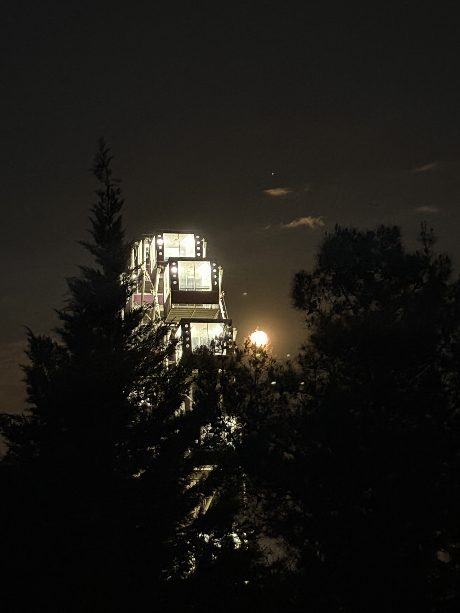
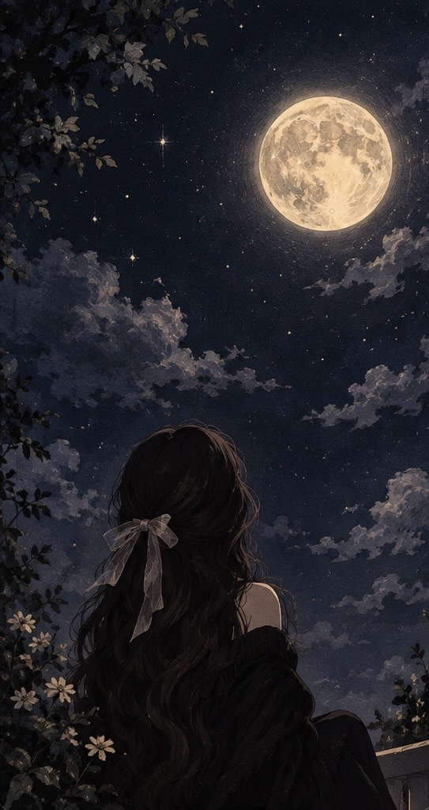
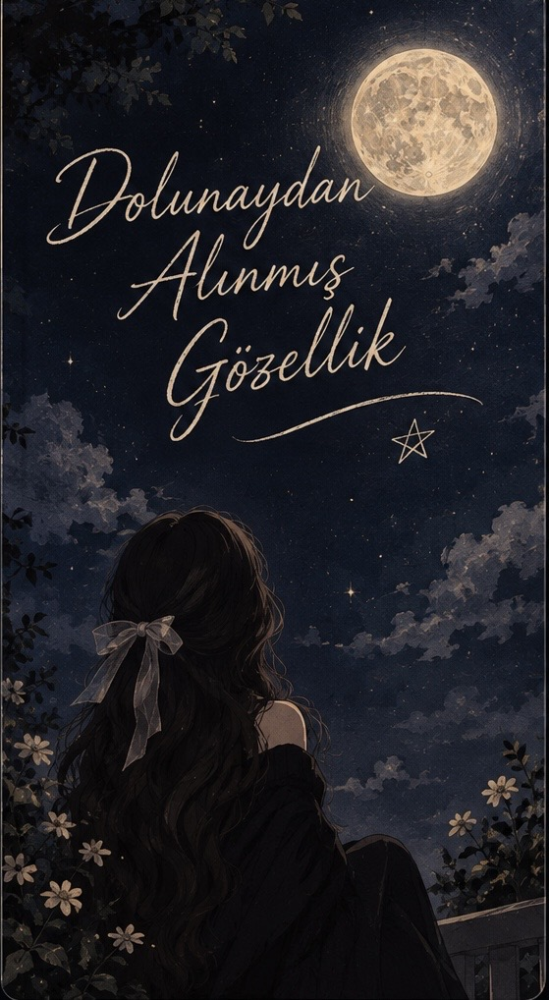

AY İŞIĞINDA YAZILMIŞ HİSSlər
Yay ayları bir müddət Ay mənim pəncərəmdə görünürdü və həmin an düşünürdüm öz özümə: Heç Ay sadə olsaydı, sadə parlayan bir cisim kimi görünsəydi, bu qədər qəlbimizə toxunardımı? Cavab verim: yox. Onu bizə sevdirən, cazibədar göstərən, onun loru dildə desək, görünən ləkələridi. Həmçinin, bir gün bütün problemlərim üst-üstə gələn vaxt Xanbağındakı skamyamda oturmuşdum. Mahnının səsin artırdım, başımı qaldırdım, göyə baxdım, quşları gördüm. Gəlib o başımın üstündəki ağaca qondular. Onlar uçdu, başqaları gəlib qondu: fərqli fərqli quşlar böcəklər. Düşündüyümdə isə ən gözəl ağaclar budaqlarl enişli çıxışlı olanlar idi. Qüsursuz, hər şeyi düz olan ağac mənə çəkici gəlmədi və bir şeyi fərq elədim, onu sənlə bölüşmək istəyirəm, çox uzatmadan. Budaqları enişli çıxışlı qüsurlu görünən ağaclar bizə uzaqdan çox çəkici və qüsursuz görünür. Dərinliyinə gedəndə o özlüyündə qüsurludu, biz baxanda yox, amma.
Həmçinin, illərlə üstünə qonan böcəklərə, üstündə yuva quran quşlara, yuvasın dağıdıb gedən quşlara, gəlib anlıq gedən quşlara, böcəklərə aldırmadan böyüməyə və gözəl görünməyə davam edirlər. Ay’a gəldikdə isə, o onun üçün qüsurlu olan ləkələri elmdə buna “maria” deyirlər, amma bizə görünən ləkədi. Hər nəysə, əslində qüsurlu olduğunu düşünüb ona elə sevgiylə baxılmamalıdı, elə? Amma hərkəs aşiqdi Ay’ın o parlamasına, özü də Dolunay dediyimiz o anda daha çox parlayıb gözümüzə sanki yeridir ki, o qüsurlarıyla necə də parlaqdır, necə də möhtəşəmdir. Eynən sənin kimi, bu yaşına qədər enişi çıxışlı olan budaqların böyüməyə, gələn gedən quşlara, böcəklərə aldırış etmədən böyüsün. Sənin gecədən alınmış tenin, saçların və o dolunay kimi parlaq gözlərin bütün ləkə kimi gördüyün hər şeyə rəğmən parlamağa davam etsin, hamının gözünə yerisin. Hər zaman gecən aydınlasın və sabahlarını xoş xəbər açsın. Hərkəsin gərgin olub, qaşlarını çatıb, bir-birinin paxıllığını çəkdiyi üçün bir birinə baxmamaq üçün başını yerdən qaldırılmadığı bu dönəmdə, ruhunla gülümsəyib səmaya baxmağı unutma. Sənin qəlbinə,ruhuna hüzur, xoşbəxtlik arzulayıram. Ay’ı Günəş aydınlata bilər, amma sənin parlamaq üçün heç kimə və heçnəyə ehtiyacın yoxdu. Hər şeyə rəğmən səmaya baxıb gülümsə, hər zaman parlamağa davam et. Unutma, səni qüsursuz edən qüsurlara, enişlərə və çıxışlara rəğmən parlamağındı.

Coldplay — Viva La Vida


Açmaq üçün toxun ✨
Səhifələri çevirmək üçün düymələrə toxun ✨